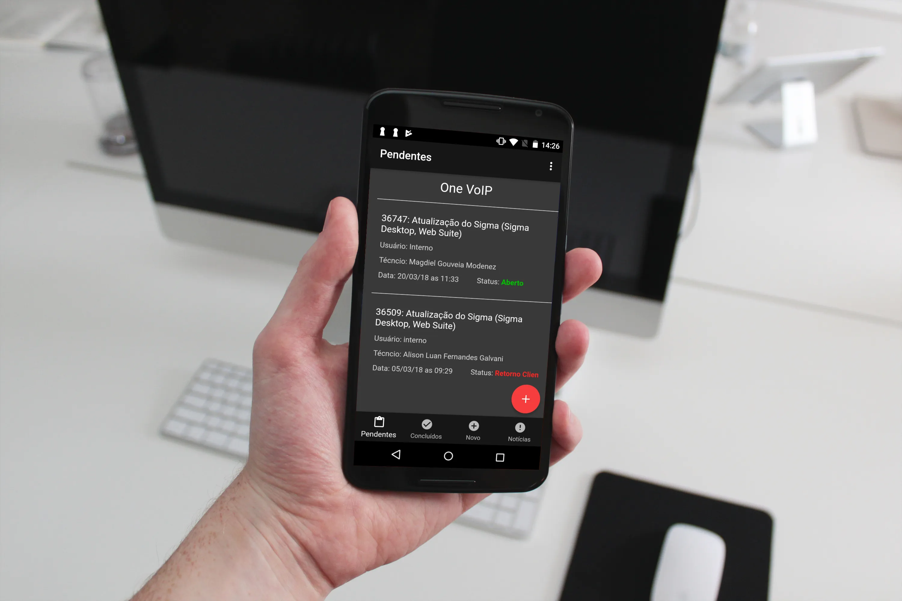

App Chamados
Facilitando e agilizando para seus clientes
Na palma da mão os clientes da empresa OneVoip podem rapidamente e de qualquer lugar abrir um chamado, ver como está a situação de seus chamados e interagir com o mesmo atáves de comentários, evitando filas ao ligar para o suporte. É possivel tambem olhar os chamados já concluidos e avaliar o atendimento prestado pelo técnico.
Controle de qualidade
O produto conta com uma dashboard para verificar os logins, chamados e avaliações feitos pelo app para a gerência controlar como está a satisfação de seus clientes e o uso do app.
←Voltar ao portfólio